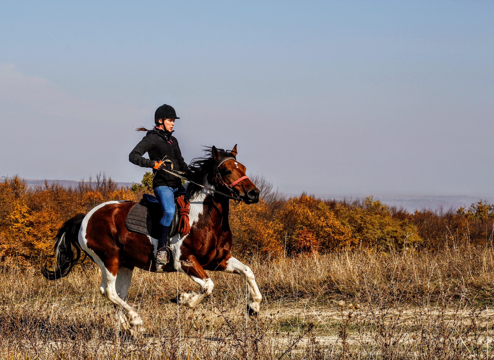
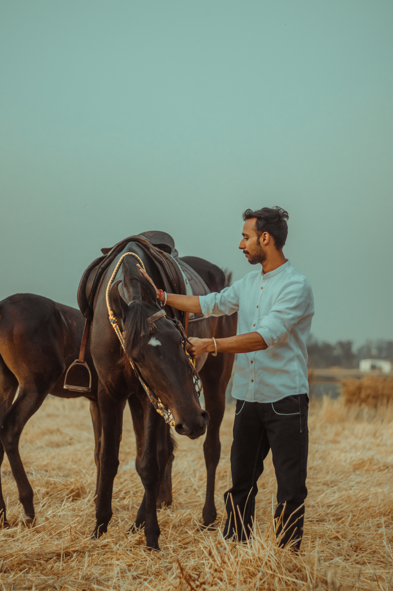

The target audience of the skyequestrian.net web site is described below:
Who: Horse trainers, instructors, eventers, riders and owners.
Age: 16 years old an up.
Style of Riding: All disciples including western, english, dressage, hunter jumper, roping, racing, reining, pleasure.
Time Outdoors: 30 minutes on up
Personas
Marriem O'Keal

Occupation: Real Estate Agent
Education: Some College
Age: 29
Style of Riding: English pleasure, endurance riding, hacking.
Time Outdoors: 6 hours on weekends only
Motivation for using site: Weekend endurance riding covers a lot of miles and it's important to keep up to date on the current conditions up ahead. For the safety of the horse and rider if bad weather is near this can then be avoided.
Gabriel Mulali

Occupation: Horse Trainer and Instructor
Education: Bachelor Degree
Age: 36
Style of Riding: Western, Liberty Training.
Time Outdoors: 5 to 6 hours daily
Motivation for using site: It's important to have access to the current weather conditions in order to plan work schedule. It's also important to know of any inclement weather so not to be trapped in a storm or caught off guard.
Scenarios
It's the day of the show and will need to bring the appropriate clothing - will the tempature outside be hot or cold?
Weekend plans for the group to trail ride and have a picnic. Need to pick which day will have a more favorable condition?
Is it safe to travel to the barn while it's snowing out? How much snow fell and how long will it snow?
Outside afternoon training but the forcast shows thunderstorms with lightening. We can reschedule for the morning before storm starts.
What should child wear for their riding lesson tomorrow? The website will give the accurate weather for a particular future date.